Примеры работ
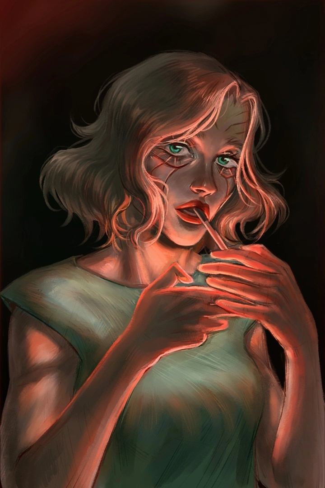
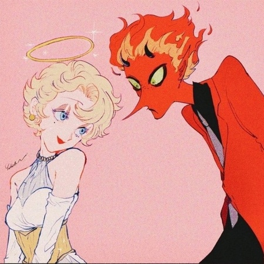
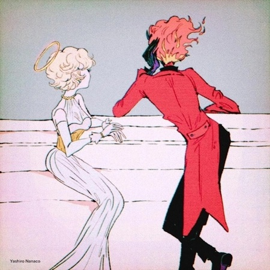
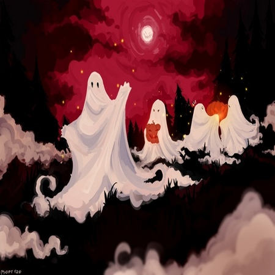
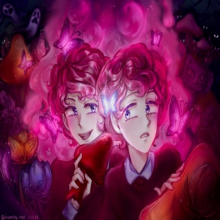
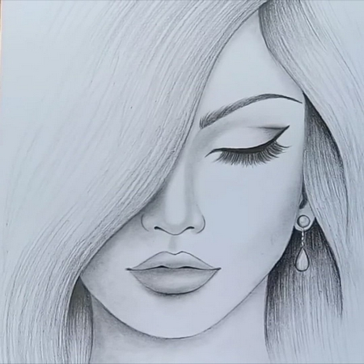
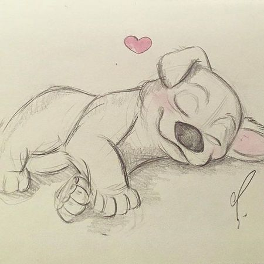
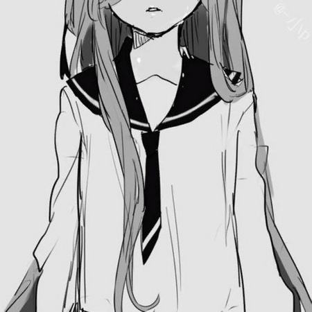
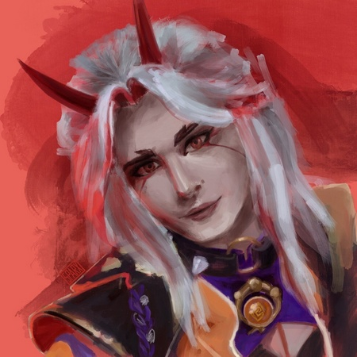
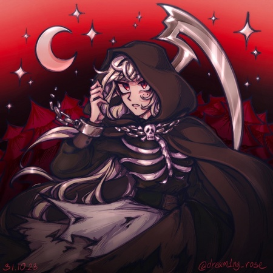
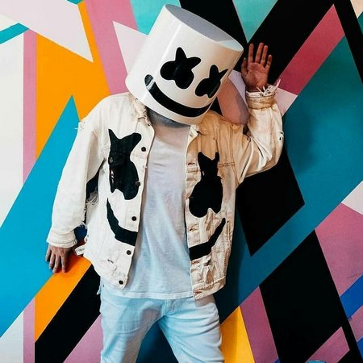
 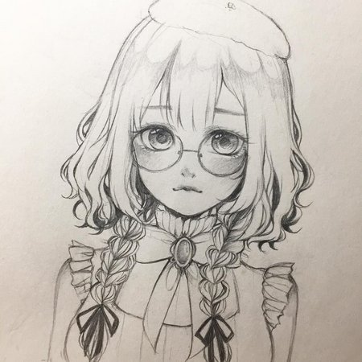
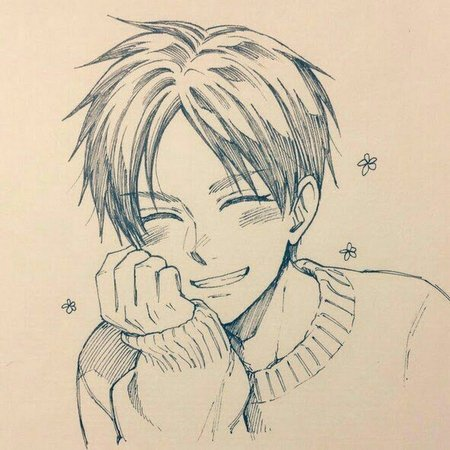
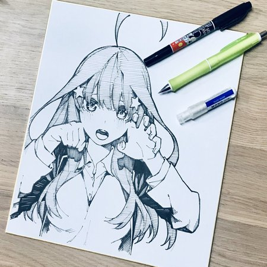
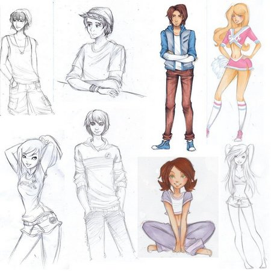
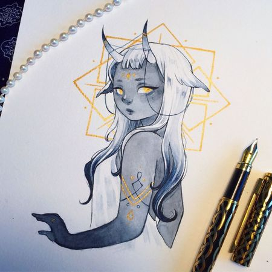
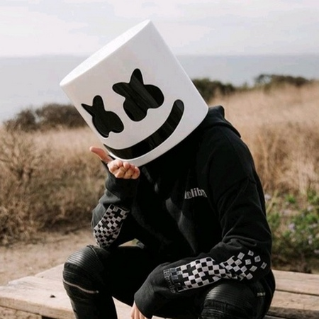
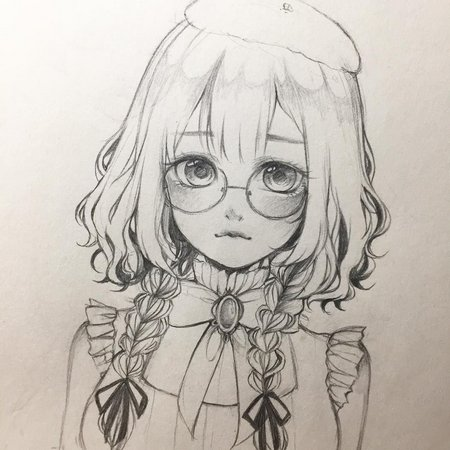
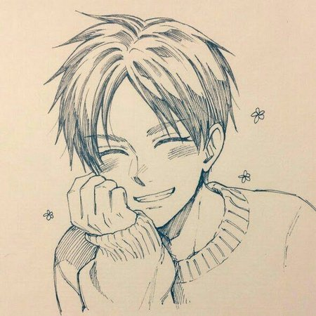
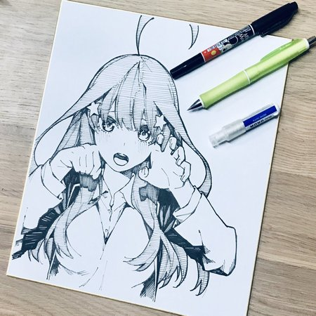
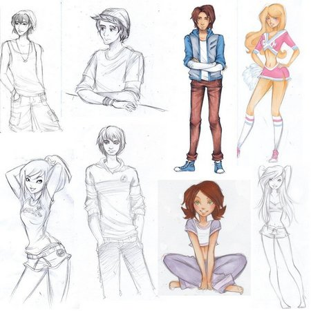
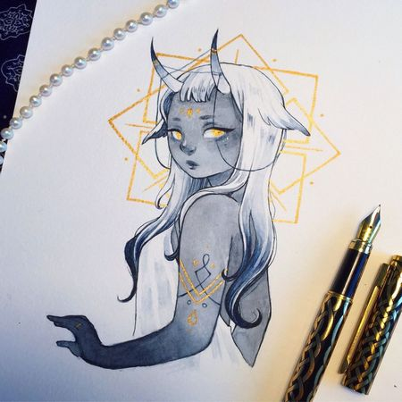
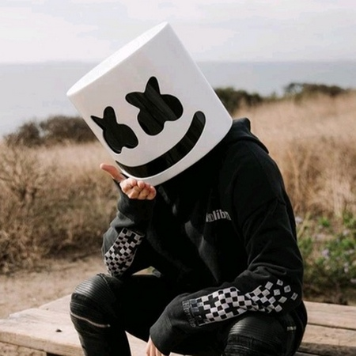
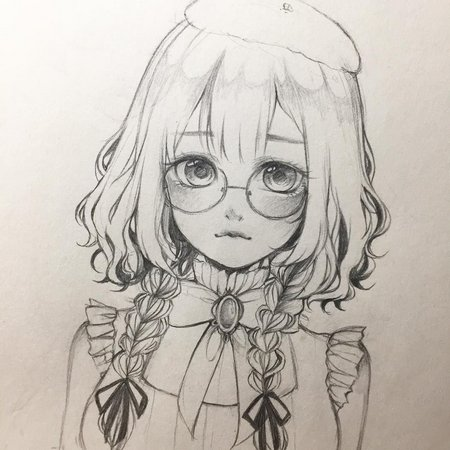
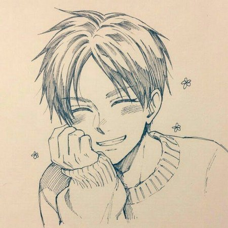
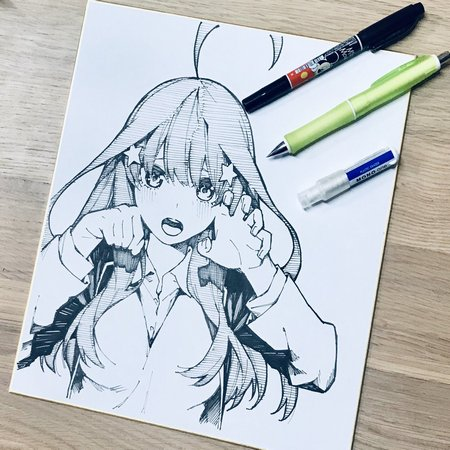
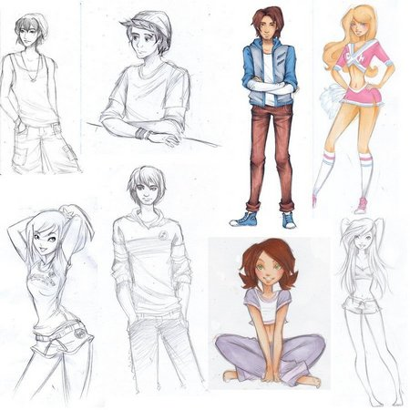
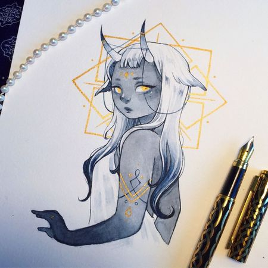
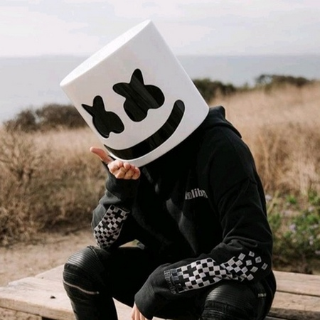
Манекены для рисования°|и позы
Расслабься! интересные факты о рисовании
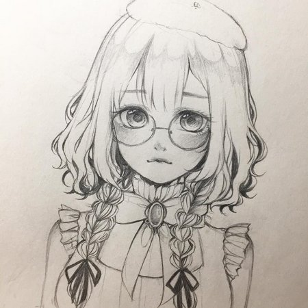
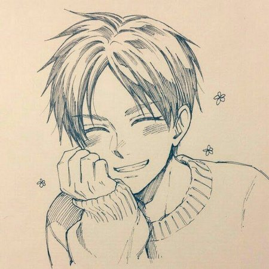
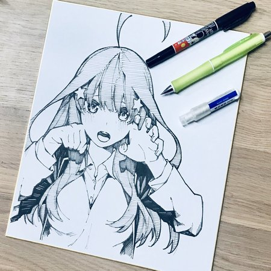
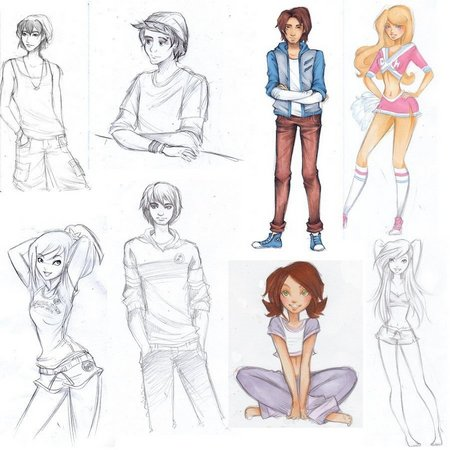
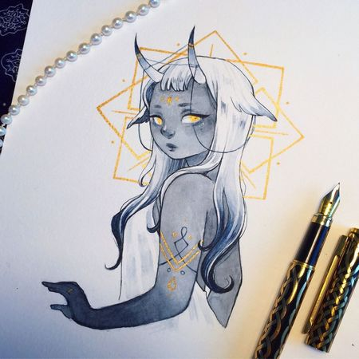
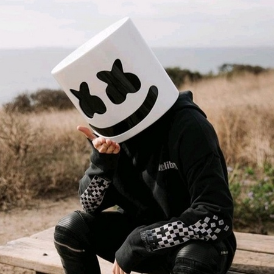
Сoветы пo рисованию
☺ Рисование - это замечательная форма искусства и самовыражения, которая включает в себя создание изображений, узоров или форм с помощью карандашей, ручек, древесного угля или других художественных инструментов.
☺ Oно может варьироваться от сложных набросков до подробных иллюстраций и может быть выполнено на различных поверхностях, таких как бумага, холст или цифровые платформы.
☺ Оно может варьироваться от сложных набросков до подробных иллюстраций и может быть выполнено на различных поверхностях, таких как бумага, холст или цифровые платформы.
☺ Рисование позволяет людям передавать эмоции, идеи и воображение посредством визуальных представлений.
☺ Это универсальный навык, который можно использовать в художественных, образовательных и практических целях, и это отличный способ раскрыть творческий потенциал и визуально общаться.
Перейди пo картинке
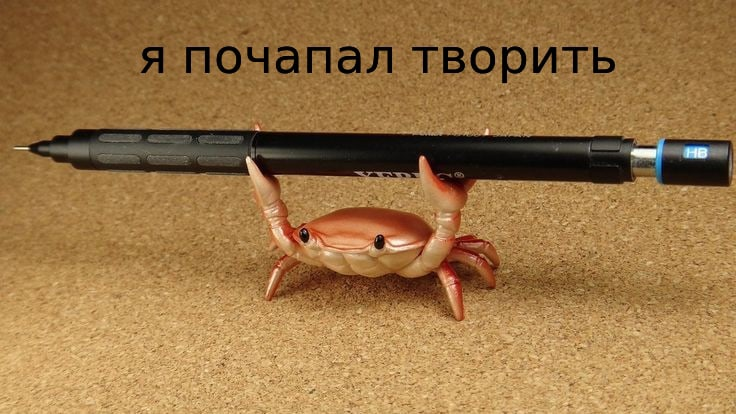